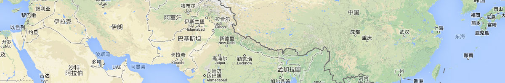

东方网力 地图API
地图API是一套由JavaScript语言编写的应用程序接口，是一款多层次、功能强大、性能稳定的客户端二次开发套件。它能为二次开发用户提供基于地理空间信息服务的二次开发接口，实现基于地理空间信息服务的网站应用，使用户能够使用基于浏览器的GIS应用。
地图API可以快速开发基于空间信息服务的GIS应用网站系统，大大降低了开发成本和难度，二次开发用户可方便敏捷地扩展地理信息服务平台的体系机构，与行业部门业务应用系统集成，实现互联网公众增值业务应用系统。
版权所有：东方网力科技股份有限公司